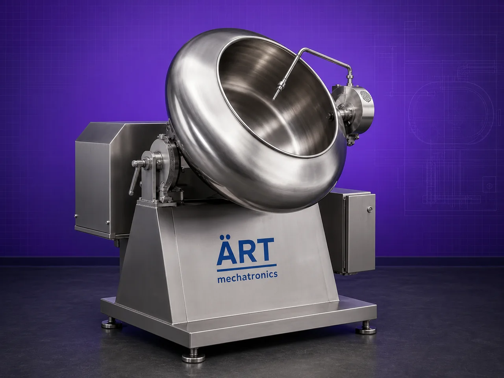

Coating Pan Mixer Machine (Industrial Coating, Seasoning & Polishing System)
A Coating Pan Mixer Machine, also known as a Coating Pan, Seasoning Drum, or Flavor Coating Machine, is an industrial processing equipment designed for uniform coating, seasoning, flavor application, polishing, and drying of granules, nuts, tablets, seeds, snacks, and food products.

About the Coating Pan Mixer
The machine consists of a rotating pan or drum, where materials tumble continuously while powders, syrups, flavors, oils, perfumes, coating solutions, or seasoning materials are sprayed or added, ensuring uniform coating on every particle.
For enhanced processing efficiency, the machine can be equipped with:
• External Hot Air Heating System for controlled drying and coating OR
• Direct Burner Heating System mounted below the pan for rapid heating and roasting applications
This allows simultaneous coating + drying + roasting, making the machine highly suitable for industries requiring flavor enhancement, polishing, crunchiness, glazing, or surface treatment.
ART Mechatronics offers high-performance coating pan mixer machines, engineered for uniform coating, hygienic processing, energy efficiency, and reliable industrial operation.
One machine, many names
Buyers search for this equipment under many terms — we manufacture all of them:
Working Principle of Coating Pan Machine
are loaded into rotating pan
Ensures even coating on all particles
are sprayed or added during rotation
The machine can be equipped with: 🔥 External Hot Air System
OR 🔥 Burner Heating System
- Burner mounted below rotating pan
- Direct flame heating for roasting and coating applications
Types of Coating Pan Machines
Industries Using Coating Pan Machine
🌿 Pan Masala & Supari Industry
- Flavor coating
- Perfume mixing
- Roasting and polishing
🍟 Snack Industry
- Seasoning of snacks and namkeen
🥜 Dry Fruit & Nut Industry
- Flavor coating and roasting
💊 Pharmaceutical Industry
- Tablet coating applications
🌶️ Spice Industry
- Granule flavor coating
🍬 Confectionery Industry
- Sugar and syrup coating
Features & Advantages
- Uniform coating and seasoning
- Simultaneous coating and drying
- Hot air or burner heating options
- Suitable for powders and liquid coating
- Hygienic and food-grade construction
- Smooth and consistent product finish
- Energy-efficient operation
- Easy cleaning and maintenance
- Suitable for roasting + coating applications
Technical Highlights
- Capacity: Small batch to industrial scale
- Construction: Stainless Steel / Mild Steel
- Heating Option:
- Hot air system
- Gas / Diesel burner
- Pan Type: Rotating coating pan
- Operation: Manual / Semi-automatic / Automatic
- Drive: Motor with gearbox
- Control System: PLC-based (optional)
Turnkey Coating Solutions
ART Mechatronics offers:
- Complete coating pan system design
- Hot air generator integration
- Burner heating system setup
- Flavor spraying systems
- Installation & commissioning
- After-sales service & AMC
Why Choose Art Mechatronics
- Expertise in industrial coating and roasting systems
- Customized solutions for food and pharma industries
- High-performance and durable machines
- Hygienic and energy-efficient designs
- Proven industrial performance
Applications
- Pan Masala Manufacturing Plants
- Snack Processing Units
- Dry Fruit Processing Plants
- Pharmaceutical Manufacturing Units
- Confectionery Processing Units
Industries that use the Coating Pan Mixer
Related Mixing & Blending machines
Get pricing & specs for the Coating Pan Mixer
Share the product, target capacity, current process and plant location. These details help our engineers discuss the right machine or line configuration.
One partner, from design to start-up
ART Mechatronics designs, manufactures, installs and commissions your Coating Pan Mixer solution with regional presence in India, UAE and Thailand.